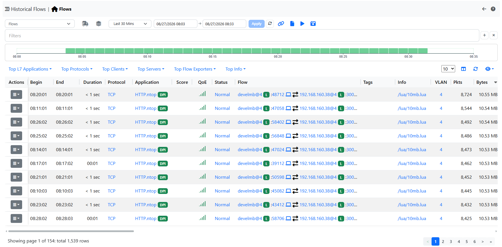
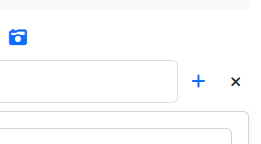
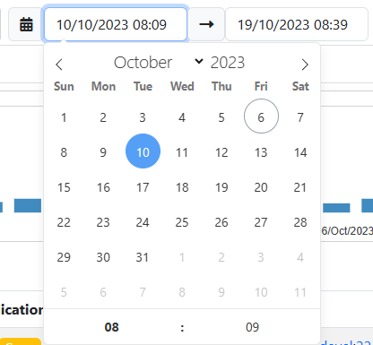
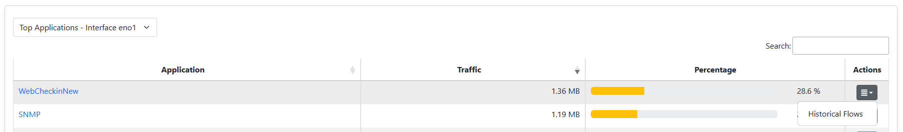
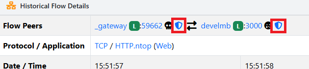
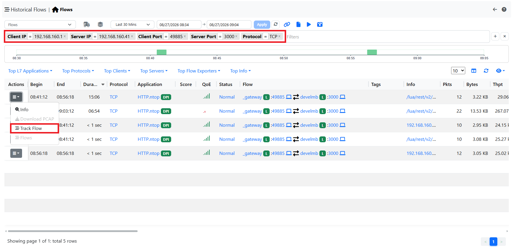
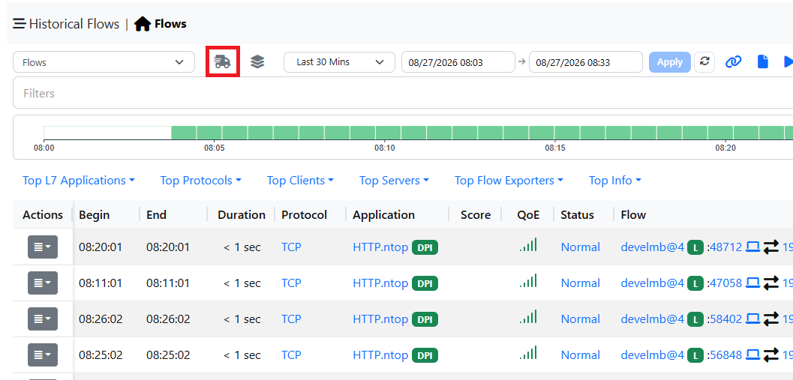
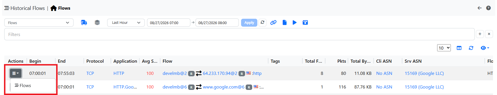
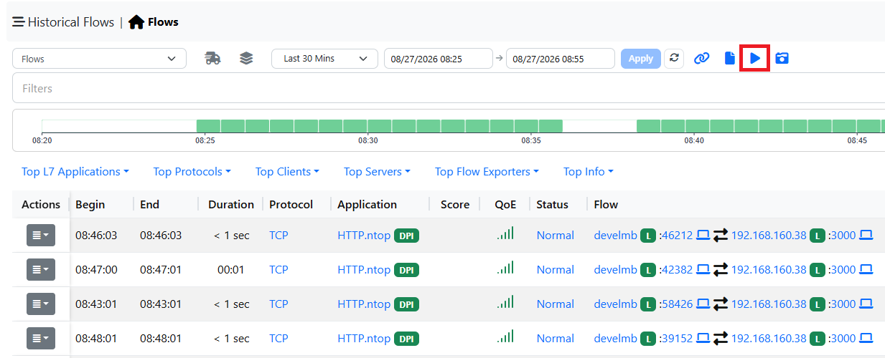
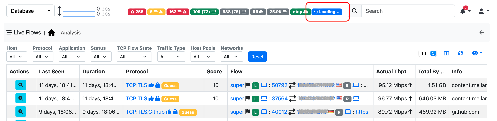

Historical
Warning
MySQL flow explorer is deprecated and it has ben discontinued in favor of the ClickHouse (Flow Dump) flows explorer. ClickHouse support is not available on Windows and embedded architectures.
When ClickHouse is enabled, an historical flows explorer becomes available in the ntopng web GUI. This page is used to navigate through the flows seen and stored by ntopng.
Note
ClickHouse support including the Historical Flows Explorer is only available in ntopng Enterprise M or above.
The explorer is available from the left sidebar, under the Flows section.

Historical Flows Explorer
It is possible, as for the Alerts Page, to navigate through the flows by filtering the results. Multiple filters are available by clicking the various results (e.g. The host develv5, to investigate its activities) or by clicking the + symbol in the right upper part of the GUI and selecting the wanted filter.

Filtering
It is possible to navigate through the time by adjusting the Date and Time using the Navigation Menu or by dragging the time from the chart.

Navigation Menu
Not all the fields are shown by default into the records, to show/hide them click the eye below the chart and select the wanted information.

Show/Hide Records Info
Other actions are possible by clicking the Action button (left most side of the records). For example the Info action redirects the user to a new page with detailed information regarding the flow.

Flow Example
Historical flows data can be also accessed from the Historical Charts .

Details
By clicking the info button of a flow (inside the action button) its details open in a side panel next to the table; the expand icon of the panel opens them as a full page. The details show the hosts and ports (click them to search the historical flows of that host, port, application or AS), the protocol, when the flow started and ended, its traffic in each direction, network quality, latencies, TCP flags, the issues with their score, MITRE ATT&CK technique and remediation guide, and the information of the application protocol (DNS, HTTP, TLS, ICMP…).
Flows of industrial protocols (Modbus, S7Comm, Profinet: Enterprise L), flows with BGP information and, when high resolution timeseries are enabled, the charts of the flow have their own tabs next to Overview. The tab of an industrial protocol is greyed out when the flow was stored without its details: move the mouse over it to see why.

Historical Flows Details
in case Wazuh is enabled and configured (see Wazuh Integration for more details), an icon will be added next to the hosts that will add the possibility to jump to the wazuh alerts filtered for the specified host in the same timeframe of the flow.

Historical Flows Details Wazuh Integration
Note
Wazuh link is enabled only for Local Hosts.
Track Flows
Since long-lived flows are periodically dumped to the database in chunks (at most every 15 minutes), a single flow lasting, for example, one hour will appear as multiple separate entries in the Historical Flows view. Click the Track Flows button to group all entries sharing the same 5-tuple, reconstructing the full flow across its entire duration.

The Track Flows button in the Historical Flows view
Enabling Flow Dump
ntopng can dump flows data to a persistent storage and provides view to browse recorded flows data in the past. Check out the ClickHouse for more details on how to setup the connection and the historical views available for this mode.
In order to dump flows to disk ntopng requires the -F clickhouse option to be specified as described in the ClickHouse.
Custom Queries
In order to analyze historical flows dumped by ntopng on ClickHouse, it is possible to use the use additional flows views, with custom queries that can aggregate the data according to some criteria, or manipulate the data in any way allowed by SQL.
The default flows view in the Historical Flows Explorer is “Flows”, which shows the full list of raw flows.

In addition to the raw “Flows”, additional built-in views are available, which are built on top of the Custom Queries engine. Here is an overview of the currently available flows views:
Flows (Bytes Chart): Displays the flows view with a bytes chart
Flows (Score Chart): Displays the flows view with a score chart
Alerted Domains: Shows the count of alerted domains
Clients: Displays the top hosts as flow clients and their traffic
Conversations: Shows the top conversations <client, server> with the highest number of flows and total traffic
L7 Contacts: L7 Contacts: Displays the top <client, server, L7 protocol> pairs and their total traffic
Latency By AS: Displays the average latency of source and destination Autonomous Systems
Number of Hosts: Shows the number of IPv4 Clients, IPv4 Servers, IPv6 Clients, and IPv6 Servers
Server Contacts: Displays servers ordered by the number of connections
Server Ports: Shows the count of used destination ports
Servers: Displays the top hosts as flow servers and their traffic
Top Clients Contacts: Shows the clients that contact the highest number of different servers
Top Contacted Servers: Shows the servers contacted by the highest number of different clients
Top Local Talkers: Displays the top local hosts with the most traffic
Top Receiver AS: Displays the top Autonomous Systems with the most received traffic
Top Receiver Countries: Displays the top countries with the most received traffic
Top Receiver Networks: Displays the top networks with the most received traffic
Top Remote Destinations: Displays the top remote destinations with the most traffic
Top Sender AS: Displays the top Autonomous Systems with the most sent traffic
Top Sender Countries: Displays the top countries with the most sent traffic
Top Sender Networks: Displays the top networks with the most sent traffic
Visited Sites: Shows the most visited domains
Major Connection State: Displays TCP Major Connection State (ATTEMPTED, ESTABLISHED, CLOSED)
Minor Connection State: Displays TCP Major and Minor Connection State

Top L7 Contacts Table
The above built-in Custom Queries can be extended by the user by creating simple JSON files containing the query description. The query definitions corresponding to the above built-in queries are available on the filesystem as JSON files under /usr/share/ntopng/scripts/historical/tables/*.json. Adding a new flow view is as simple as placing one more JSON file within the same folder.
Here is an example JSON file for the Clients flow view.
{
"name" : "Clients",
"i18n_name" : "clients",
"data_source" : "flows",
"show_in_page" : "overview",
"hourly": true,
"visualization_type" : "table",
"select" : {
"items" : [
{
"name" : "VLAN_ID"
},
{
"name" : "IPV4_SRC_ADDR"
},
{
"name" : "IPV6_SRC_ADDR"
},
{
"name" : "SRC_LABEL"
},
{
"name" : "SRC_COUNTRY_CODE"
},
{
"name" : "total_bytes",
"func" : "SUM",
"param" : "TOTAL_BYTES",
"value_type" : "bytes"
}
]
},
"filters" : {
"items" : [
{
"name": "PROBE_IP"
},
{
"name": "INPUT_SNMP"
},
{
"name": "OUTPUT_SNMP"
}
]
},
"groupby" : {
"items" : [
{
"name" : "VLAN_ID"
},
{
"name" : "IPV4_SRC_ADDR"
},
{
"name" : "IPV6_SRC_ADDR"
},
{
"name" : "SRC_LABEL"
},
{
"name" : "SRC_COUNTRY_CODE"
}
]
},
"sortby" : {
"items" : [
{
"name" : "total_bytes",
"order" : "DESC"
}
]
}
}
The JSON format is self-explanatory. It is possible to define the columns to be shown under the select tree, the columns on which the group-by is applied under the groupby tree, and the default column on which sorting is applied under the sortby tree. Aggregation functions can also be defined, such as the ‘sum’ item in the example. For more complicated examples, it is recommended to take a look at the built-in query definitions available in the same folders.
The complete list of columns is available in the database schema located at /usr/share/ntopng/httpdocs/misc/db_schema_clickhouse.sql
Exporting Flows
By clicking on the  icon, it’s possible to download a copy of
the raw flows in CSV format. Here is the same data shown in the picture above in
CSV format:
icon, it’s possible to download a copy of
the raw flows in CSV format. Here is the same data shown in the picture above in
CSV format:
L7_PROTO|IP_DST_PORT|FLOW_TIME|BYTES|FIRST_SEEN|LAST_SEEN|IP_SRC_PORT|NTOPNG_INSTANCE_NAME|IP_PROTOCOL_VERSION|IPV4_SRC_ADDR|JSON|PACKETS|IPV4_DST_ADDR|INTERFACE_ID|PROFILE|INFO|IPV6_DST_ADDR|VLAN_ID|PROTOCOL|IPV6_SRC_ADDR
143|443|1544712866|18262|1544712646|1544712866|32886|PC local|4|192.168.1.6||53|17.248.146.148|1|ssl|feedbackws.icloud.com|::|0|6|::
143|443|1544712876|13958|1544712749|1544712876|34078|PC local|4|192.168.1.6||46|17.248.146.148|1|ssl|p66-iwmb0.icloud.com|::|0|6|::
143|443|1544718548|203978|1544718247|1544718548|38928|PC local|4|192.168.1.6||431|17.248.146.148|1|ssl|p66-ckdatabasews.icloud.com|::|0|6|::
143|443|1544718821|175770|1544718548|1544718821|38928|PC local|4|192.168.1.6||370|17.248.146.148|1|ssl|p66-ckdatabasews.icloud.com|::|0|6|::
143|443|1544723738|14663|1544723557|1544723738|49328|PC local|4|192.168.1.6||45|17.248.146.148|1|ssl|p66-pushws.icloud.com|::|0|6|::
Data Retention
The retention of the flows dump on disk can be configured from the Data Retention preferences setting, in days and, optionally, as a maximum disk space in GB (see Flows/Alerts Max Disk Space). When the disk space limit is reached, the oldest days of flows and alerts are deleted.
Hourly Historical Flows
Note
The Hourly Historical Flows view is exclusive to ntopng Enterprise XL.
Enabling the ‘Hourly’ flag on the Historical Flow Explorer in ntopng displays an aggregated view of the historical flows.

Hourly Historical Flows Explorer
The historical flows are aggregated by several fields, including:
Begin (Start epoch of the flows)
End (End epoch of the flows)
Protocol (L4 Protocol)
Application (L7 Protocol)
Flow (Client IP - Client Port - Server IP - Server Port)
Avg Score (The average score of the aggregated raw flows)
Total Flows (The total number of aggregated flows in the single entry)
Pkts (The total number of packets in the aggregated flows in the single entry)
Total Bytes (The sum of TX and RX traffic of the aggregated flows in the single entry)
Client ASN (Autonomous System Number assigned to the client)
Server ASN (Autonomous System Number assigned to the server)
Flow Risk (Level of risk associated with flow)
Flow Exporter (System or tool exporting flow data)
Client Network (Network associated with the client)
Server Network (Network associated with the server)
In SNMP iface (Input SNMP interface)
Out SNMP iface (Output SNMP interface)
Client Country (Country associated with the client)
Server Country (Country associated with the server)
Client MAC (MAC Address of the client)
Server MAC (MAC Address of the server)
ntopng Instance Name
With Hourly Historical Flows, it is possible to better analyze past traffic by providing a summary of historical flows.
Clicking on the ‘Flows’ entry in the ‘Actions’ menu of a specific hourly historical flow entry allows the user to navigate back to the Historical Flows, filtered by client IP, server IP, server port, flow exporter, and ntopng instance name.

Hourly Historical Flows - Flows button
This displays the flows that compose the single entry of the hourly historical flows.
On the Hourly Historical Flows Explorer, many ‘Top Filters’ are present, including:
Top Applications (L7 Protocols with most traffic)
Top Protocols (L4 Protocols with most traffic)
Top Clients (Clients with most traffic)
Top Servers (Servers with most traffic)
Top Hosts (Hosts with most traffic)
Aggregation Preferences
On the preferences page, in the ClickHouse tab, it is possible to modify the hourly flows aggregation settings.

Hourly Historical Flows Settings
ClickHouse Aggregated Flows Data Retention: Number of days to retain aggregated flow information (must be greater than the retention period for unaggregated flows); the default is 60 days.
ClickHouse Limit Aggregated Flows: Maximum number of aggregated flow entries to insert in each hourly dump.
ClickHouse Minimum Aggregated Flow Traffic: Discard aggregated flows with a size less than the specified value (in kilobytes).
Include Alerted Flows: Include all alerted flows in the aggregated flows.
Replay Historical Flows
Although the Historical Flow Explorer provides a lot of flexibility for analysing historical flows (by means of filtering capabilities, reports, graphical analysis pages, custom queries) it does not provide all the analysis features which are available for live traffic. In order to overcome this, an historical flows replay functionality has been introduced in ntopng 6.2 (and later versions), to be able to restore and analyse historical flows on a virtual “live” ntopng interface.
In order to replay historical flows, go to the Historical Flow Explorer, select a time frame (and optionally some filters), click on the Replay (play) button in the toolbox and confirm with Analyse. Only administrators can replay historical flows.

Historical Flows Replay Button
This will create a new Database “live” interface, similar to any other physical interface in ntopng, and open its live flows. Please note that:
Records processing may take a while, depending on the number of records selected from the database. A “Loading” badge appears at the top of the page until records processing completes.
Since traffic is analysed as live traffic, there is a maximum number of active flows and hosts that can be stored in memory and thus processed. This depends on the configured flow and host cache size (the same limitation for physical interfaces applies).

Historical Flows Live View
Historical Flows Archive for Compliance
To meet regulatory requirements such as GDPR, SOX, HIPAA, and PCI DSS, network data often needs to be retained for extended periods. ntopng supports exporting flow data from ClickHouse before it is deleted due to the TTL (time-to-live) mechanism, allowing for compliant long-term archiving on external storage systems.
This document describes how to enable flow data export, configure it, and re-import archived data into ClickHouse when needed.
Benefits
Regulatory Compliance: Satisfy long-term data retention mandates.
Storage Optimization: Prevent local storage exhaustion by exporting data before TTL deletion.
Audit Trail: Maintain historical records for forensic or compliance analysis.
Data Recovery: Re-import flow data as needed for investigation.
Enabling Flow Export
Follow these steps to enable flow data export in the ntopng web interface:
Log in to the ntopng web interface.
From the Left Sidebar, navigate to: Settings → Preferences → ClickHouse
Locate the export option (e.g., “Export Deleted Flows to File”).
Enable this option by toggling it on.
Once enabled, ntopng will automatically export flow records before they are deleted by the TTL mechanism. The export happens daily at midnight.
Default Export Location
Path: /var/lib/ntopng
File Format: Native ClickHouse format
File Frequency: One file per day
Each exported file contains all flow data scheduled for TTL deletion that day.
Custom Export Directory
To change the export directory:
Edit the ntopng configuration file or use the command-line argument: –db-archive-dir|6 <custom_path>
Replace <custom_path> with your desired export location.
Importing Archived Flow Data
You can restore exported flow data to ClickHouse for analysis:
Prerequisites:
A machine with clickhouse-client installed.
Command:
`bash
clickhouse-client --query="INSERT INTO ntopng.flows FORMAT Native" < /path/to/exported_file
`
Steps:
Copy the desired archived file to a system with access to ClickHouse.
Run the clickhouse-client command as shown above.
Confirm that the data has been successfully imported.
Viewing Imported Data in ntopng
Once the data is imported, it becomes visible in the ntopng UI:
Go to:
Flows → Historical and select the time range that corresponds to the data you imported.
Important Notes
Timestamps: Each file contains exactly one day of data, with timestamps in UTC. For example, data from X 00:00:00 UTC to X+1 day is in one file.
Retention: Imported data is subject to the same TTL rules. If the data is already older than the configured TTL window, it will be deleted at the next midnight cycle.
Import Timing: Ensure you plan imports carefully to avoid losing data immediately after restoration.